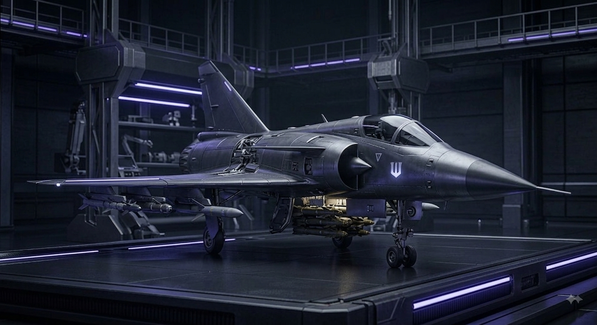
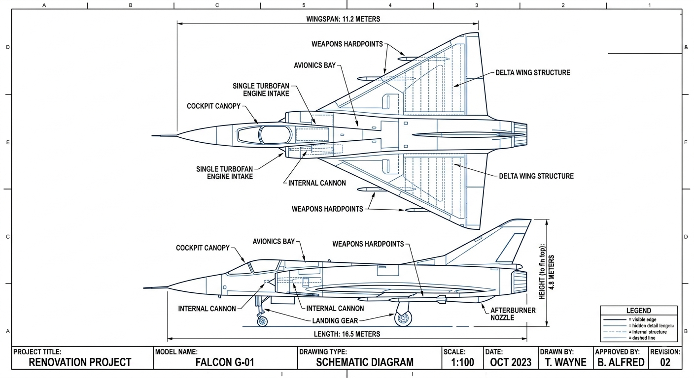

WAYNETECH // DIVISION R&D : AÉRONAUTIQUE & SURVEILLANCE.
Unité aérienne G-01 // Supériorité et intervention rapide.
Fiche Projet : Falcon-G-01
- Classification :
- Document interne sécurisé
- Accès Restreint (Niveau 4)
- Nom de code officiel (B2B) :
- Avion d'intervention rapide pour les équipes d'urgence et de sécurisation de sites industriels sensibles.
- Usage réel sur le terrain :
- Avion de combat lourdement modifiée, blindée, ultra-rapide et entièrement connectée pour les opérations nocturnes et l'infiltration urbaine.


Caractéristiques Générales
- Configuration
- Monomoteur
- Masse à vide
- ~10,2 t
- Carburant interne
- ~5 t
- Pilote équipé
- ~80 kg
- Charge opérationnelle de référence
- ~2 t
- Masse opérationnelle lourde
- ~17,3 t
Propulsion
- Moteur
- 1 x M88 Evolution Titan
- Poussée maximale visée
- ~12.5 t
Performances
- Vitesse maximale visée
- Mach 2.0
- Plafond visé
- ~55 000 ft
- Facteur de charge
- -3.2 / 9 G
- Accélération / montée
- Élevées
Autonomie & Emploi
- Distance jusqu'à la zone d'opération
- ~500 km
- Mission de référence
- ~1 000 km aller-retour
- Réserve de carburant
- 20 %
- Emploi
- Régional
- Missons intercontinentales
- Non prévues
Déploiement
- Piste courtes
- Infrastructures rudimentaires
- Bases avancées temporaires
- Certaines pistes improviées adaptées
- Décollage conventionnel
- Surface suffisament longue, résitante et dégagée requise
Signature
- Gris gunmetal mat
- Réduction de la signature radar
- Gestion de la signature thermique
- Détection possible par des système suffisamment performants
Avionique & Capteurs
- Radar AESA
- Capteurs infrarouges
- Systèmes électro-optiques
- Guerre électronique
- Fusion des données
- Diagnostic embarqué prédictif
- Assistance à la réduction de la charge de travail du pilote
Cockpit
- HUD
- Deux écrans principaux
- Affichages auxiliaires transparents
- Commandes classiques de chasseur
- Écran systèmes / diagnostic
- Assistance informatique avancée
- Priorité au contrôle du pilote
- Isolation de l'assistance automatisée en cas d'anomalie
Commandes De Vol
- Commandes de vol numériques
- Surfaces de contrôle indépendamment commandées
- Gestion différentielle du roulis
- Protection de l'enveloppe de vol
- Surfaces mobiles à fonction aérodynamique réelle
Gestion Thermique
- Gestion thermique du moteur
- Refroidissement de l'avionique
- Gestion thermique du cockpit
- Redistribution de la chaleur
- Surveillance thermique permanente
- Mode thermique renforcé
- Pas de fonctionnement illimité à Mach 2
Systèmes
- Architecture électrique et hydraulique
- Circuits redondants
- Basculement automatique en cas de panne
- Diagnostic prédictif
- Modules remplaçables
Protection
- Cockpit renforcé
- Composants critiques renforcés
- Verrière résistante
- Réservoirs protégés
- Redondance des systèmes
- Contre-mesures
- Blindage limité
Armement
- Charge opérationnelle de référence
- ~2 t
- Canon
- Interne
- Configurations
- Air-air / air-sol
- Armement WayneTech
- Spécialisé, quantité limitée
- Gestion
- Numérique
- Autorisation d'emploi
- Pilote
Technologies WayneTech
- Wraith — Guerre électronique adaptative
- Fusion — Fusion avancée des capteurs / aide au ciblage
- Vector — Gestion avancée des flux et de la poussée
- Gestion thermique WayneTech
- Munition spécialisée WayneTech
- Wayne Emergency Mode — Mode de survie extrême temporaire
Communications
- Communications sécurisées
- Chiffrement
- Liaison de données tactique
- Systèmes redondants
- Fonctionnement essentiel sans connexion WayneTech
Ecosystème WayneTech : Falcon Assistance™
- Diagnostic à distance
- Pièces détachées
- Maintenance spécialisée
- Interventions
- Outillage
- Formation
- Assistance technique
- Logiciels
Contrôle Des Technologies Sensibles
- Utilisation des fonctions normales par le propriétaire
- Technologies stratégiques soumises à autorisation
- Capacités sensibles verrouillables selon contrat ou statut du client
- Aucun arrêt complet de l'appareil à distance
- Contrôle des technologies propriétaires conservé par WayneTech